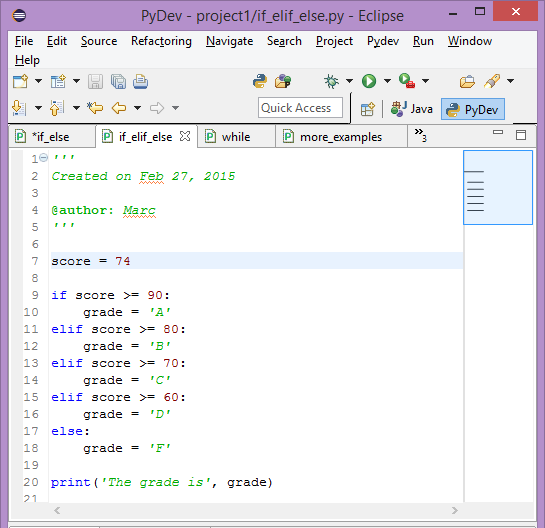
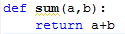
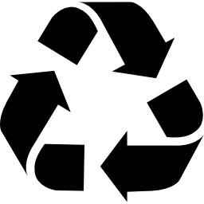
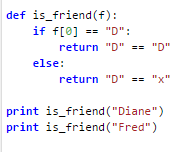
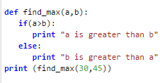

Lesson 0: Intro to Programming Languages
Computing Basics
This lesson offered a brief overview of the way computers operate and how programming languages can be used to perform basic computations.
Here are some of the key terms that were discussed along with their definitions.

- computer: a general purpose devise that can be programmed to do something
- program: a sequence of instructions (written in a specific language) that a computer follows
- programming languages: formally constructed ways of writing instructions so that a computer can follow them
- interpreter: a computer program that executes (carries out) another program written in a programming language
- Python: a high level programming language with relatively simple syntax that was designed to reduce the number of lines of code needed to write a program
- grammar: programming language rules that must be followed in order for written code to function properly; generally specific to the type of programming language being used
- Python expressions: a line of code that contains some combination of values, variables, and operators; e.g. a mathematical equation
- value: data belonging to a particular type, i.e. integers, strings, etc.
- variable: a name that refers to a value
- operator: a computational symbol
Lessons 1 & 2: The Basics of Working With Python
Variables and Strings
&
Input » Function » Output
The "Grammar" of the Python Programming Language
The Python Programming Language is similar to other languages (C++, Java), yet there are some crucial differences.
Before delving into the details however, let's take a look at some of the basics of Python.
We mentioned the concepts of values, variables, and operators, but it is worth reviewing them in more detail.
- Value: In Python, a value is a piece of data that belongs to a particular type. For example, there are:
- Integers (int)
- Floating Point Numbers (float)
- Strings (str)
- etc.
One thing to keep in mind is that value types matter when working with data. 2 + 2 is not equivalent to '2' + '2'
The first evaluates to 4. The second evaluates to '22'. Why?
This is because 2 (without quotations) is interpreted as an integer, while '2' (with quotations) is interpreted as a character in a string.
- Variable: In Python, a variable can be thought of as the name assigned to a value.
For example, the integer (int) 6 can be assigned the name "number_of_sides_on_dice"
The integer 6 is the value. The name is the variable.
In terms of code, it looks like this: number_of_sides_on_dice = 6
- Variables allow programmers a way to easily recognize the meaning of a particular value.
- In the previous example the number '6' could mean a multitude of things, but by naming it with a variable (number_of_sides_on_dice) it becomes understood what it meant.
- Variables can be reassigned. Say you had a weird dice with eight sides. Then you could do this:
number_of_sides_on_dice = number_of_sides_on_dice + 2
Now number_of_sides_on_dice = 8
See? No problem.
- Operator: Without going into much detail, an operator is a symbol used in computation.
Multiplication (*), Division (/), Addition (+), Subtraction (-), Modulo (%), Exponential (**), etc.
As an additional note, in Python the ' = ' sign represents 'assignment' and not 'equal to.' In order to idicate 'equivalency' you must use the ' == ' symbol.
Python has a certain structure in the way it is written.
Instead of using brackets like C++, complete functions or blocks of code are indicated by indenting the lines of code. You can see this in the screenshot below.

So what exactly is a function? Well... it depends. In the Python language,
a function is a block of code that performs a task.
For example,

is a function that returns the sum of two numbers that the user enters.
Another way of understanding functions is to think of a function as a
statement that takes some type of input and produces some type of output.
The
return part of the function is necessary to produce the output.
One thing that should be apparent is that the same function can be used over and over again.
Since a function can accommodate a range of different inputs (depending on the input type), it can produce a range of outputs.

Lessons 3: Decisions and Repetition: If and While
Making Decisions in Python: The Use of If & Else
If statements are fairly common in programming languages and are used in decision making.
Sometimes they will be referred to as
if-else statements because the two are usually paired together.
If-else statements are
conditional statements; if 'x' then 'y'. In other words, if some
condition is met then the program will do something.
If the condition is not met, the program will do something else.
In Python, if-else statements take the following form:

Here's another example:

Repition/Iteration in Python: The Use of While Loops
While loops are iterative functions that are also fairly common in programming languages.
By iterative, we mean that a while loop can repeat (hence, the term "loop") until some condition is met.
For example, say we wanted to have an ouput of a sequence of numbers going from 0 to 7.
First we need to assign some variable, let's call it
n, equal to our starting value of 0.
n = 0
Next we need to create the while loop function. It looks like this:
while(n <= 7):
Now we need to tell the function to do something:
print (n)
Finally we need to increment
n by 1:
n = n + 1
All together, the loop looks like this:
n = 0
while(n <= 7):
print (n)
n = n + 1
For this example, the output is simply this:
0
1
2
3
4
5
6
7
Lessons 4: Structured Data: Lists and For Loops
Lists
Lists are type of structured data that, as the name implies, store values in a... wait for it... a list!
They are said to be mutable, because lists can be changed after they are created yet they retain their original ID value ( id(list) is the same after change).
In Python, lists are created using [ ]. For example:
['apples', 'oranges', 'pears', 'grapes', 'kiwis']
Lists can contain strings, numbers, or a combination of the two. For example:
['dalmations', 101, 'disney']
In addition, lists can be concatentated using the + operator.
greetings_1 = ['hey', 'yo', 'how ya doin']
greetings_2 = ['hello', 'good day to you', 'greetings dear sir']
greetings_3 = greetings_1 + greetings_2
print greetings_3
['hey', 'yo', 'how ya doin', 'hello', 'good day to you', 'greetings dear sir']
And the traits just keep coming! Lists can be nested within other lists.
warning = ['objects', 'mirror', ['closer', 'appear']]
Indexing the previous list looks like this:
print warning[1]
mirror
print warning[2]
['closer', 'appear']
You can add items to a list using list_name.append('item to be added')
And you can find the number of items in a list using len(list_name)
For Loops
For Loops allow for iteration over a sequence. Basically, this means that the loop will "run through"
a sequence until it is "told" to stop. An example should clear things up.
Say you wanted to print out all the elements of a list, one at a time.
Let's call our list
our_list and give it these elements: 1, 2, 3, 4, 5.
our_list = [1,2,3,4,5]
If we just said "print our_list" it would look like this:
print our_list
[1,2,3,4,5]
Obviously, this is not what we wanted.
Now let's use a
for loop.
def our_loop(p):
for e in p:
print (e)
1
2
3
4
5
Now, at this point you may be wondering what is the point of all of these
loops and
ifs and
whiles.
The truth is, I HAVE NO CLUE!
Hey, print out some numbers!!! AWESOME!!!
Look at this! Find the position of a number!!! Fantastic!!!
It's tough to write notes about a subject matter that seems so arbitrary and downright pointless.
Look, I know you have crawl before you can walk, but come on.
Much more of this, and I'm packing it up for good.
But I digress.
Stage 2 Summary
Review of the Material Covered
- Variable: a name assigned to a value; allows for easy recognition of the meaning of a value; can be reassigned to other values.
- Functions: blocks of code that performs a task; a statement that takes some type of input and produces some type of output.
- If-Else Statement: conditional statements; if some condition is met then the program will do something. If the condition is not met, the program will do something else.
- While Loops: iterative functions that can repeat until some condition is met.
- Lists: structure data that can contain any combination of strings and numbers. Written in the following manner: [value, value, value...]
- For Loops: allow for iteration or 'scanning' across a sequence; good for locating a value in a list
Overview
While the specific programming language that is focused upon in this lesson is Python, there are general principles that can be picked out and applied to nearly all types of computer programming languages.
- Formatting matters! Whether it be indenting or use of brackets, correct formatting is essential for a program to run
- Larger problems should be broken down into smaller components! It's easier to figure out a problem in a step wise fashion rather than trying to solve it all at once.
- Make sure the variable names are meaningful so that you know what they are there for.
- Remember to make use of comments!
- There is usually more than one way to go about solving a problem. The first solution that you come up with might work but it also might not be the best solution possible. Typically, simpler is better when it comes to programming.


{kind=link}